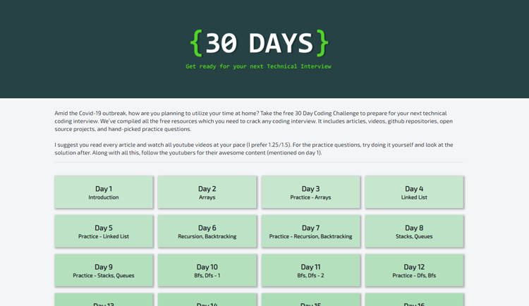
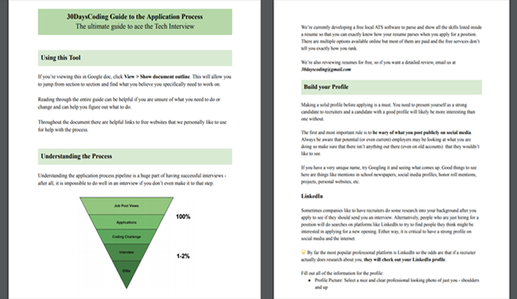
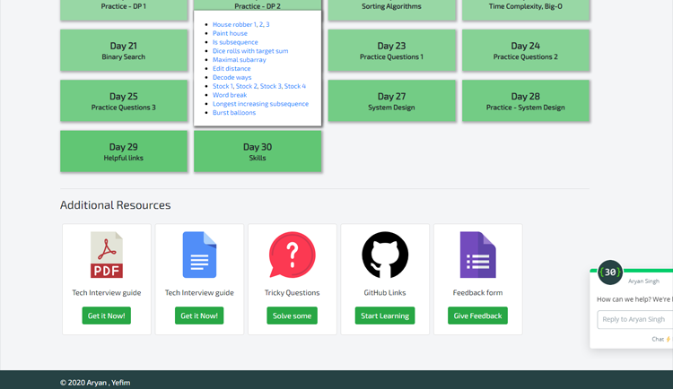
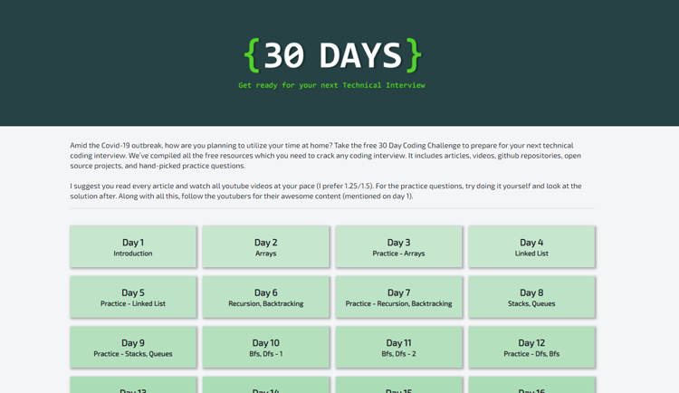
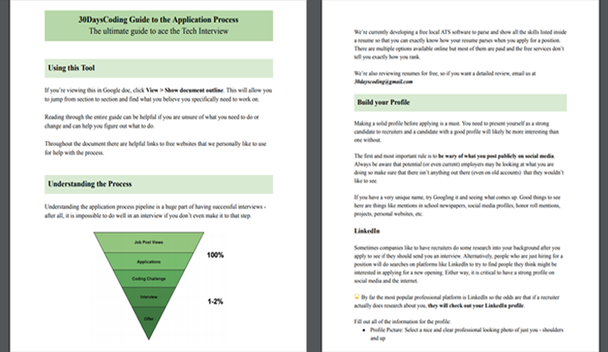
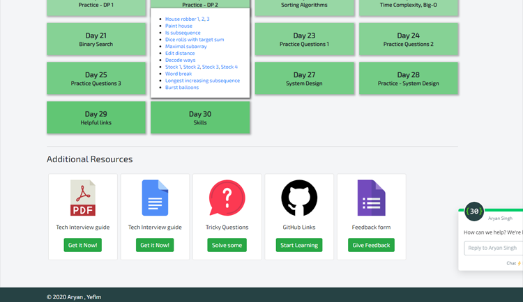

Education

University of Massachusetts Amherst
Master of Science
Computer Science
Awards: Bay State Scholars Scholarship
Coursework
University of Massachusetts Amherst
Bachelor of Science
Double Major in Computer Science & Mathematics (Computing)
Awards: Dean's List, Cum Laude, John and Abigail Adams Scholarship
Activities and Societies: UMass Cybersecurity Club, UMass Design Club, UMass Association for Computing Machinery
Coursework


 







![]()